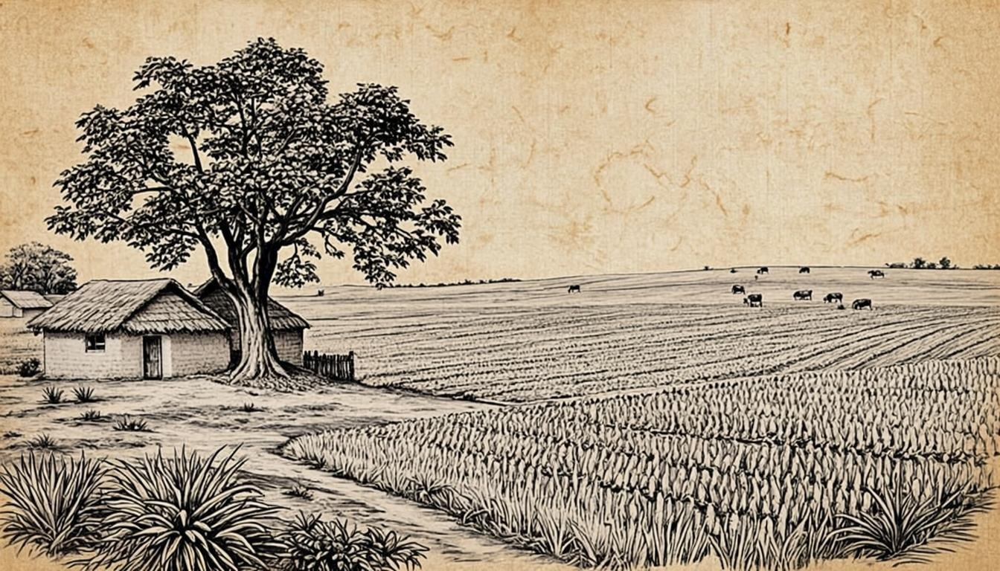

Input
Natural & agricultural streams
Material that already exists in rural ecosystems.
Gaurikrit's sustainability approach is a material system, not a marketing dashboard: one natural resource, developed into useful products, in a cycle designed so nothing goes to waste.

Gaurikrit's circular model describes how the resource enters, is developed, becomes useful products — and renews the cycle.
Natural and agricultural material streams are gathered.
The raw material is prepared and stabilised.
It is developed into useful working materials.
Materials are formed into product families.
Walls, energy and everyday-use applications.
Each use replaces a less sustainable alternative.
The cycle renews — nothing goes to waste.
The same natural material base is developed into wall coatings, fuel directions and utility directions — value multiplied by application, not extraction.
Material that already exists in rural ecosystems.

Processed and developed into useful material families.

Walls, energy and daily-use directions from one base.
Five areas, described qualitatively — no numbers until verified data exists.
Reducing dependence on conventional resource-intensive alternatives.
Creating useful applications for natural and agricultural material streams.
Exploring renewable biomass-based fuel applications.
Directional reduction of reliance on fossil-based materials.
Creating additional value around agricultural ecosystems.
Verified figures will be published as project data becomes available — see the measurement framework below.
Every ecosystem direction exists to substitute a conventional, resource-intensive alternative.
Cow dung is gathered in rural and agricultural ecosystems. Developing it into products creates additional value around those ecosystems — for households, gaushalas and agricultural communities.
Gaurikrit works with Gaushalas and institutions exploring cow-dung-based bio-products — see Partners.

Quantified impact is published only when verified project data exists. Nothing on this page is a projected, estimated or aspirational number.
Trees saved through GoCast and material directions — measured when verified project data is available.
Natural and agricultural material streams carried into products.
Biomass fuel applications replacing conventional fuel use.
Emissions reduction from verified lifecycle analysis.
Additional value created around agricultural ecosystems.